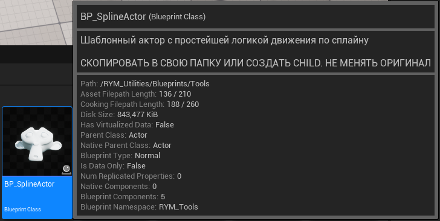
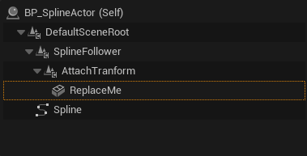
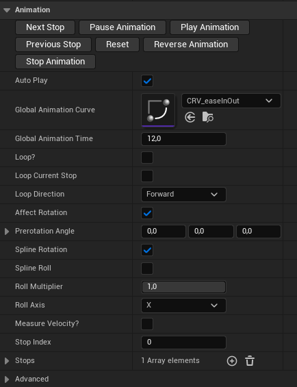
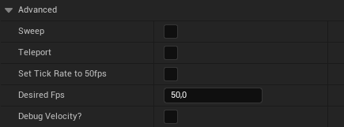
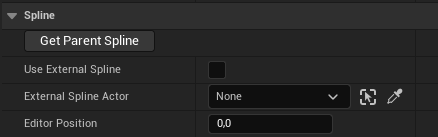
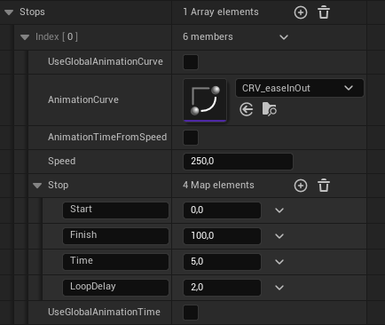
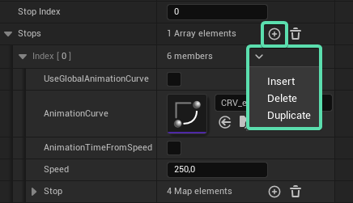
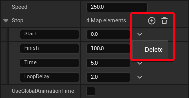

BP_SplineActor¶
RYM_Utilities
Ситуация
Вам нужно запустить объект в движение по определённой траектории, возможно с остановками (движение по секторам) по пути. Это может быть обычный предмет, самолёт совершающий манёвр, ракета и пр.
\(\quad\)Для этой цели вполне подойдёт BP_SplineActor. Это "шаблонный" актор, в котором реализована полноценная, достаточно функциональная, но не слишком сложная логика передвижения по траектории сплайна. Он работает с любым сплайном, но лучше всего раскрывается в паре с моим SplinePath, так как реализует его кастомную логику продольного вращения не привязанного к точкам образующим сплайн.
Алгоритм работы:¶
Найдите в плагине BP_SplineActor и скопируйте к себе в папку.
Примечание
Лучше всего сделать это, чтобы в будущем была возможность модифицировать его поведение независимо от плагина, потому что любые изменения в версии плагина, не будут передаваться вместе с мигрейтом.

\(\quad\) Если планируется двигать много разных объектов, но без изменения логики, то добавить свой объект можно даже на экземпляре блюпринта на уровне, чтобы иметь гибкость использовать один и тот же класс блюпринта для вызова его функций у "разных" объектов. Однако, в случае уникального объекта со своими нюансами и изменениями логики, лучше сделать это изнутри. По сплайну двигается компонент SplineFollower и всё что приаттачено к нему.

Поэтому, ваш компонент должен быть так же приаттачен к AttachTransform, чтобы вы имели максимальную гибкость в настройке трансформов своего компонента. Если это должен быть уже готовый блюпринт, который ещё и может быть подвержен воздействию других компонентов, то можно добавить его в качестве ChildActor компонента.
- Переименуйте свою версию ассета BP_SplineActor в контент браузере в соответствии с содержимым и нуждами, чтобы не было дублирования с версией в плагине. Если этот блюпринт используется как шаблон для множества объектов на уровне, то можно ограничиться добавлением суффикса из вашего имени (например) к названию.
- Забросьте свой новый блюпринт на уровень со сплайном - другими словами создайте его экземпляр (инстанс).
- Если объект неправильно повёрнут, компенсируем поворот параметром Prerotation Angle или поворачиваем компонент AttachTransform (или сам меш) желаемым образом. В случае неудачного расположения пивота объекта относительно сплайна, можно так же его и подвинуть.
- Если нужно продольное вращение (вдоль оси движения), то можно активировать параметр Spline Roll.
- Для предпросмотра положения объекта на определённом участке сплайна используйте параметр Editor Position.
- Далее можно настроить остановки Или, для начала, углубиться в настройку анимации под свою задачу.
Как использовать другой сплайн
При желании можно использовать сплайн другого актора, например SplinePath
- Приаттачте к актору со сплайном экземпляр своего блюпринта.
- Сбросьте его трансформы.
- Нажмите кнопку Get Parent Spline чтобы не указывать сплайн вручную.
Настройки анимации¶
Итак, перед вами длинная панель настроек, но всё не так страшно как может показаться.

Кнопки¶
Play/Pause/Stop/Reverse Animation¶
Обычное управление анимацией
Next/Previous Stop¶
Ручное переключение остановок, полезно при отключенном Loop
Параметры¶
Auto play¶
Автоматическое включение анимации при старте игры.
Global Animation Curve¶
Глобальная кривая интерполяции времени (скорости) движения. Может быть использована вместо кривой заложенной в сектор.
Global Animation Time¶
Глобальное время анимации. Может быть использовано вместо времени определённого в секторе.
Loop?¶
Зациклить анимацию. По умолчанию автопродолжающийся - переключает последовательно остановки (сектора).
Loop Current Stop¶
Отключает автопродолжение цикла и зацикливает только текущий выбранный сектор.
Loop Direction¶
Направление автопродолжающегося цикла.
Affect Rotation¶
Включить влияние логики на поворот объекта.
Prerotation Angle¶
Угол постоянной поправки поворота объекта.
Spline Rotation¶
Направлять объект вдоль сплайна.
Roll Axis¶
Ось объекта, по которой применять продольное вращение сплайна (Roll).
Spline Roll¶
Добавлять к вращению объекта продольное вращение сплайна.
RollMultiplier¶
Множитель интенсивности продольного вращения. Выведено для простой корректировки на всей протяжённости движения.
Measure Velocity?¶
Активирует логику измерения скорости движения. Может быть полезно для использования с дополнительной логикой.
Stop Index¶
Порядковый номер сектора. Этот параметр трогать не нужно, он просто визуализирует текущее состояние.
Advanced¶

Tick Rate to 50fps¶
Синхронизировать частоту тика объекта с частотой в 50fps, чтобы избежать лишних вычислений. Может пригодиться при оптимизации, но дёргано выглядит при 120fps в редакторе. По умолчанию отключено и спрятано в сворачиваемую секцию.
Sweep, Teleport¶
Опциональные переключатели учёта коллизий объекта. Взято напрямую из ноды Set Location и возможно не работает. Нужны тесты.
Spline¶

Get Parent Spline¶
Автоматически найдёт сплайн у актора родительского для этого актора. Назначит находку в свойство External Spline Actor.
Use External Spline¶
Переключает на использование сплайна другого актора, при наличии такового
External Spline Actor¶
Актор со сплайн-компонентом, движение по которому нужно осуществить
Editor Position¶
Положение объекта вдоль кривой в процентах от длины сплайна. Используется для быстрого предпросмотра состояний объекта на разных участках сплайна.
Stops¶
сектора/остановки

По сути, это настраиваемые участки движения.

Этими кнопками можно управлять кол-вом остановок: создавать новые, дублировать имеющиеся, удалять ненужные.
UseGlobalAnimationCurve¶
Использовать глобальную кривую анимации
AnimationCurve¶
Ассет кривой для интерполяции скорости/времени анимации этого сектора
AnimationTimeFromSpeed¶
Использовать значение скорости (Speed) для вычисления времени анимирования объекта по этому сектору. Технически, это отвязывает скорость движения объекта от длины сплайна. Естественно время движения при этом будет меняться в соответствии с длиной пути и скоростью.
Speed¶
Скорость движения объекта в анриаловских (по идее) единицах в секунду при включённом AnimationTimeFromSpeed.
Stop¶
Настройки сектора

Важно!
Добавлять, удалять или переименовывать пункты нельзя. Эти кнопки не трогаем. Только меняем числовые значения полей
Start, Finish¶
Точки на сплайне в процентах от длины кривой, между которыми осуществляется движение.
Time¶
Время затрачиваемое на движение.
LoopDelay¶
Пауза до перехода к анимации по следующему сектору при включённой опции Loop.
UseGlobalAnimationTime¶
Использовать глобальное значение времени анимации